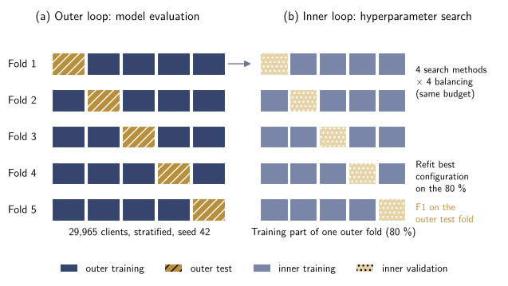
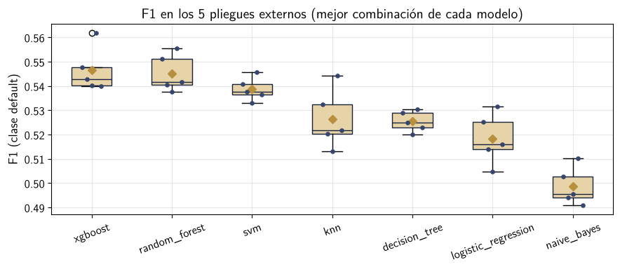

04. Ejecutar experimentos: validación cruzada anidada 5 × 5#
Este capítulo documenta cómo se ejecutaron las 112 combinaciones de los modelos de referencia: 7 modelos × 4 técnicas de balanceo × 4 métodos de búsqueda de hiperparámetros. Todas usan la misma validación cruzada anidada estratificada de 5 pliegues externos y 5 internos, con semilla 42.
El bucle externo estima el desempeño. Cada uno de los 5 pliegues deja fuera el 20 % de los clientes como prueba, y la prueba solo se usa una vez, al final.
El bucle interno elige los hiperparámetros. Divide el 80 % de entrenamiento de cada pliegue externo en 5 subpliegues, prueba cada configuración con validación cruzada y reajusta la mejor sobre todo ese 80 %.
Todas las cifras del proyecto (tabla maestra, pruebas estadísticas, paper, libro y tablero) salen de esta validación 5 × 5.
import sys, json
from pathlib import Path
PROJECT_ROOT = Path.cwd().parent
sys.path[:0] = [str(PROJECT_ROOT), str(PROJECT_ROOT / "experiments" / "paper")]
import numpy as np
import pandas as pd
import matplotlib.pyplot as plt
from IPython.display import display
from sklearn.model_selection import StratifiedKFold
from src import config
from src.data_loader import load_processed_dataset, split_features_target
from src.preprocessing import remove_duplicate_rows, check_label_conflicts
pd.options.display.float_format = "{:,.4f}".format
print(f"Validación anidada: {config.N_OUTER_FOLDS} pliegues externos × {config.N_INNER_FOLDS} internos, "
f"semilla {config.RANDOM_STATE}")
Validación anidada: 5 pliegues externos × 5 internos, semilla 42
Datos#
df, n_dup = remove_duplicate_rows(load_processed_dataset())
X, y = split_features_target(df)
print(f"{X.shape[0]:,} clientes × {X.shape[1]} variables · duplicados eliminados ahora: {n_dup} "
f"(ya se quitaron en el ETL) · tasa de default {y.mean():.2%}")
print(f"Grupos con variables idénticas y etiqueta distinta (ruido del dataset): {check_label_conflicts(df)}")
29,965 clientes × 20 variables · duplicados eliminados ahora: 0 (ya se quitaron en el ETL) · tasa de default 22.13%
Grupos con variables idénticas y etiqueta distinta (ruido del dataset): 21
El esquema de validación#
La figura muestra el esquema. En el panel (a), cada fila es una iteración del bucle externo: el pliegue dorado es la prueba y los azules son el entrenamiento. El panel (b) muestra el bucle interno, que se repite dentro del entrenamiento de cada pliegue externo. La misma figura está en la Sección 2.9 del paper.
import logging
logging.getLogger("matplotlib.font_manager").setLevel(logging.ERROR)
import figuras_paper as fp
%matplotlib inline
fig = fp.validacion_anidada()
display(fig); plt.close(fig)

Los 5 pliegues externos son los mismos para todos los modelos. Cada uno tiene unos 5 993 clientes de prueba con la misma tasa de default:
externo = StratifiedKFold(n_splits=config.N_OUTER_FOLDS, shuffle=True, random_state=config.RANDOM_STATE)
filas = []
for k, (tr, te) in enumerate(externo.split(X, y), start=1):
filas.append({"pliegue externo": k, "entrenamiento": len(tr), "prueba": len(te),
"default en entrenamiento": y.iloc[tr].mean(), "default en prueba": y.iloc[te].mean()})
pd.DataFrame(filas).set_index("pliegue externo")
| entrenamiento | prueba | default en entrenamiento | default en prueba | |
|---|---|---|---|---|
| pliegue externo | ||||
| 1 | 23972 | 5993 | 0.2213 | 0.2213 |
| 2 | 23972 | 5993 | 0.2213 | 0.2213 |
| 3 | 23972 | 5993 | 0.2213 | 0.2213 |
| 4 | 23972 | 5993 | 0.2213 | 0.2213 |
| 5 | 23972 | 5993 | 0.2213 | 0.2213 |
Cómo se ejecutó#
La corrida completa tomó más de 30 horas de cómputo, así que no se repite aquí: se lanzó con scripts y cada combinación terminada se guardó en un archivo de control, para poder reanudar la corrida.
Modelos |
Dónde |
Script |
Resultado |
|---|---|---|---|
Naive Bayes, regresión logística, árbol de decisión, Random Forest y XGBoost (80 combinaciones) |
CPU local |
|
|
KNN y SVM (32 combinaciones) |
Google Colab, GPU T4 con cuML |
|
|
CS-FOF, el modelo original (capítulo 10) |
CPU local |
|
|
Después, python -m src.master_table une todo en la tabla maestra results/master_table_112.csv.
La llamada que hace cada script es la misma:
table, results = run_experiments(
X, y, models=..., techniques=None, methods=None, # None = las 4 técnicas y los 4 métodos
n_outer_folds=config.N_OUTER_FOLDS, # 5
n_inner_folds=config.N_INNER_FOLDS, # 5
optimizer_kwargs_by_method={...}, # malla, 25 aleatorias, 30 de Optuna, genético 16 × 10
checkpoint_path=..., resume=True)
Verificación de la tabla maestra#
Se comprueba que las 112 combinaciones usan 5 pliegues externos y 5 internos y que cada una tiene 5 valores de F1:
M = pd.read_csv(PROJECT_ROOT / "results" / "master_table_112.csv")
n_f1 = M["f1_per_fold"].map(lambda s: len(json.loads(s)))
print(f"Combinaciones: {len(M)} · modelos: {M['model'].nunique()}")
print(f"Pliegues externos: {sorted(M['n_outer_folds'].unique())} · internos: {sorted(M['n_inner_folds'].unique())} · "
f"valores de F1 por combinación: {sorted(n_f1.unique())}")
resumen = (M.groupby("model")
.agg(combinaciones=("f1_mean", "size"), mejor_F1=("f1_mean", "max"), peor_F1=("f1_mean", "min"),
horas=("total_time_seconds", lambda s: s.sum() / 3600), origen=("source", "first"))
.sort_values("mejor_F1", ascending=False))
resumen
Combinaciones: 112 · modelos: 7
Pliegues externos: [np.int64(5)] · internos: [np.int64(5)] · valores de F1 por combinación: [np.int64(5)]
| combinaciones | mejor_F1 | peor_F1 | horas | origen | |
|---|---|---|---|---|---|
| model | |||||
| xgboost | 16 | 0.5466 | 0.4728 | 3.2477 | local_cpu_sklearn |
| random_forest | 16 | 0.5452 | 0.4759 | 12.0953 | local_cpu_sklearn |
| svm | 16 | 0.5387 | 0.4368 | 12.5454 | colab_gpu_cuml |
| knn | 16 | 0.5264 | 0.4470 | 0.3295 | colab_gpu_cuml |
| decision_tree | 16 | 0.5254 | 0.4658 | 0.3299 | local_cpu_sklearn |
| logistic_regression | 16 | 0.5182 | 0.3777 | 1.6774 | local_cpu_sklearn |
| naive_bayes | 16 | 0.4987 | 0.4949 | 0.3409 | local_cpu_sklearn |
Mejor combinación de cada modelo#
La tabla muestra media ± desviación estándar en los 5 pliegues externos, con ddof=1. El análisis estadístico completo está en el capítulo 05.
mejor = M.loc[M.groupby("model")["f1_mean"].idxmax()].sort_values("f1_mean", ascending=False)
fmt = lambda m, s: f"{m:.4f} ± {s:.4f}"
pd.DataFrame({
"modelo": mejor["model"], "balanceo": mejor["technique"], "búsqueda": mejor["method"],
"F1": [fmt(a, b) for a, b in zip(mejor["f1_mean"], mejor["f1_std"])],
"precisión": [fmt(a, b) for a, b in zip(mejor["precision_mean"], mejor["precision_std"])],
"recall": [fmt(a, b) for a, b in zip(mejor["recall_mean"], mejor["recall_std"])],
"AUC-ROC": [fmt(a, b) for a, b in zip(mejor["roc_auc_mean"], mejor["roc_auc_std"])],
}).reset_index(drop=True)
| modelo | balanceo | búsqueda | F1 | precisión | recall | AUC-ROC | |
|---|---|---|---|---|---|---|---|
| 0 | xgboost | class_weight | bayesian_optuna | 0.5466 ± 0.0091 | 0.4927 ± 0.0140 | 0.6149 ± 0.0282 | 0.7828 ± 0.0089 |
| 1 | random_forest | class_weight | random_search | 0.5452 ± 0.0077 | 0.4974 ± 0.0116 | 0.6041 ± 0.0214 | 0.7831 ± 0.0095 |
| 2 | svm | smote | random_search | 0.5387 ± 0.0048 | 0.4795 ± 0.0074 | 0.6148 ± 0.0097 | 0.7638 ± 0.0096 |
| 3 | knn | class_weight | random_search | 0.5264 ± 0.0122 | 0.4569 ± 0.0111 | 0.6208 ± 0.0162 | 0.7629 ± 0.0081 |
| 4 | decision_tree | class_weight | bayesian_optuna | 0.5254 ± 0.0043 | 0.4788 ± 0.0235 | 0.5854 ± 0.0388 | 0.7569 ± 0.0101 |
| 5 | logistic_regression | class_weight | genetic_deap | 0.5182 ± 0.0104 | 0.4484 ± 0.0116 | 0.6139 ± 0.0104 | 0.7449 ± 0.0147 |
| 6 | naive_bayes | smote | grid_search | 0.4987 ± 0.0078 | 0.4136 ± 0.0078 | 0.6279 ± 0.0124 | 0.7454 ± 0.0115 |
fig, ax = plt.subplots(figsize=(9, 4))
orden = mejor["model"].tolist()
datos = [json.loads(M.loc[(M.model == m)].sort_values("f1_mean").iloc[-1]["f1_per_fold"]) for m in orden]
ax.boxplot(datos, tick_labels=orden, showmeans=True, patch_artist=True,
boxprops=dict(facecolor="#E6D3A8", color="#1A233D"), medianprops=dict(color="#1A233D"),
meanprops=dict(marker="D", markerfacecolor="#B88F3D", markeredgecolor="#B88F3D"))
for i, d in enumerate(datos, start=1):
ax.scatter(np.full(len(d), i) + np.linspace(-0.12, 0.12, len(d)), d, s=14, color="#36456D", zorder=3)
ax.set_ylabel("F1 (clase default)"); ax.set_title("F1 en los 5 pliegues externos (mejor combinación de cada modelo)")
ax.tick_params(axis="x", rotation=20); ax.grid(axis="y", alpha=0.3)
plt.tight_layout(); plt.show()

Sobre la corrida preliminar 3 × 3. Antes de esta corrida se hizo una preliminar con 3 pliegues externos y 3 internos. Se reemplazó por la 5 × 5 porque la guía pide al menos 5 pliegues, y para tener 5 valores por combinación en las pruebas estadísticas. Esa corrida se conserva solo como registro en
notebooks/legacy/04_run_experiments_3x3.ipynbyresults/legacy_3x3/. Ningún resultado del proyecto sale de ella.